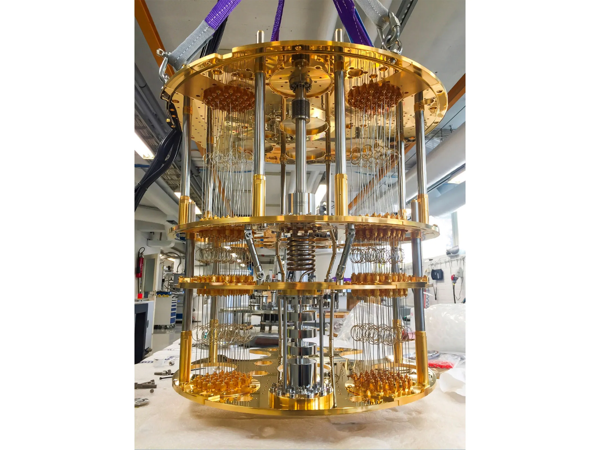
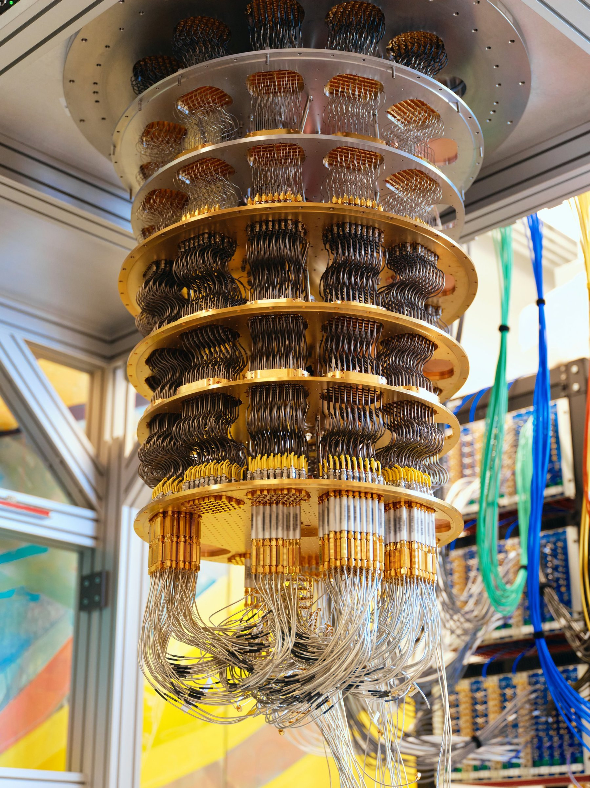

QUANTUM COMPUTING


A quantum computer is a computer that exploits quantum mechanical
phenomena. On small scales, physical matter exhibits properties of both
particles and waves, and quantum computing takes advantage of this
behavior using specialized hardware. Classical physics cannot explain the
operation of these quantum devices, and a scalable quantum computer could
perform some calculations exponentially faster than any modern
"classical" computer. Theoretically a large-scale quantum computer could
break some widely used encryption schemes and aid physicists in performing
physical simulations; however, the current state of the art is largely
experimental and impractical, with several obstacles to useful
applications. The basic unit of information in quantum computing, the
qubit (or "quantum bit"), serves the same function as the bit in classical
computing. However, unlike a classical bit, which can be in one of two
states (a binary), a qubit can exist in a superposition of its two "basis"
states, a state that is in an abstract sense "between" the two basis
states. When measuring a qubit, the result is a probabilistic output of a
classical bit. If a quantum computer manipulates the qubit in a particular
way, wave interference effects can amplify the desired measurement
results. The design of quantum algorithms involves creating procedures
that allow a quantum computer to perform calculations efficiently and
quickly.
Quantum computers are not yet practical for real-world
applications. Physically engineering high-quality qubits has proven to be
challenging. If a physical qubit is not sufficiently isolated from its
environment, it suffers from quantum decoherence, introducing noise into
calculations. National governments have invested heavily in experimental
research aimed at developing scalable qubits with longer coherence times
and lower error rates. Example implementations include superconductors
(which isolate an electrical current by eliminating electrical resistance)
and ion traps (which confine a single atomic particle using
electromagnetic fields). In principle, a classical computer can solve the
same computational problems as a quantum computer, given enough time.
Quantum advantage comes in the form of time complexity rather than
computability, and quantum complexity theory shows that some quantum
algorithms are exponentially more efficient than the best-known classical
algorithms. A large-scale quantum computer could in theory solve
computational problems that are not solvable within a reasonable timeframe
for a classical computer. This concept of additional ability has been
called "quantum supremacy". While such claims have drawn significant
attention to the discipline, near-term practical use cases remain limited.